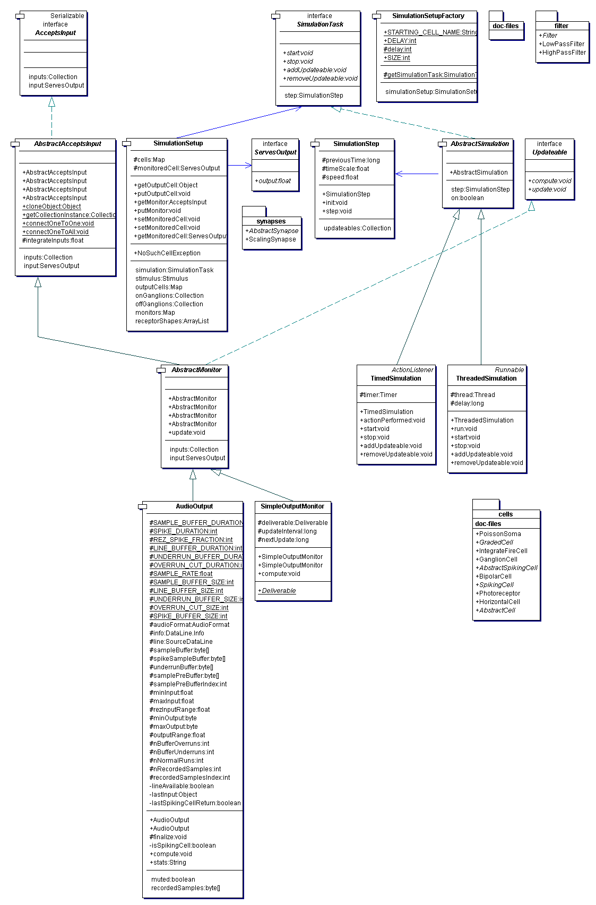

The simulation is updated by a particular {@link ch.unizh.ini.friend.simulation.SimulationTask}. This task is hard-coded to be
either a {@link ch.unizh.ini.friend.simulation.ThreadedSimulation} or a {@link ch.unizh.ini.friend.simulation.TimedSimulation} by
{@link ch.unizh.ini.friend.simulation.SimulationSetupFactory}. The SimulationTask simply loops over the
{@link ch.unizh.ini.friend.simulation.SimulationStep}. This SimulationStep first computes all the cell responses
at the present time step, and then updates the output values of all the cells based on what happened during that time step.
All objects (cells and monitors) that need to be processed for a simulation have the interface {@link ch.unizh.ini.friend.simulation.Updateable}, which affords a double-buffering of the simulation by separating the {@link ch.unizh.ini.friend.simulation.Updateable#compute computation} and {@link ch.unizh.ini.friend.simulation.Updateable#update double-buffering} of the states of all the components.
This double-buffering means that the latency is linear in the number of stages of processing. An excitation of a photoreceptor will only reach a cortical simple cell output after the information has flowed through the photoreceptor, bipolar, ganglion, and simple cell ouptuts -- at least 4 simulation update cycles.
The number of simulation iterations over the population of updateables is controlled by {@link ch.unizh.ini.friend.simulation.SimulationStep#nIterate}. This parameter can be set to >1 to iterate over all the cells multiple times for each simulation. Setting this >1 will propogate signals through the network more quickly, although the dynamics will not be changed because each simulation step uses the real time as measured by System.currentTimeMillis().
Cells in the simulation are either constructed by one-to-one correspondence with a preceeding layer by static methods (e.g., {@link ch.unizh.ini.friend.simulation.AbstractAcceptsInput#connectOneToOne}, {@link ch.unizh.ini.friend.simulation.cells.BipolarCell#getArrayListInstance}) or by specific assignment of inputs. Inputs to cells usually implement {@link ch.unizh.ini.friend.simulation.ServesOutput}, the most common inputs are cells and synapses (e.g., descendants of {@link ch.unizh.ini.friend.simulation.cells.AbstractCell}, {@link ch.unizh.ini.friend.simulation.synapses.AbstractSynapse}).
Simulation monitoring by the GUI is possible by means of monitors (objects that usually implement {@link ch.unizh.ini.friend.simulation.AbstractMonitor}). This class implements {@link ch.unizh.ini.friend.simulation.Updateable}, so concrete descendants can be added to the simulation to monitor a particular cell. An example is {@link ch.unizh.ini.friend.simulation.SimpleOutputMonitor}, which is used by the GUI to put the activity of a selected cell on the {@link ch.unizh.ini.friend.gui.ActivityMeter}. {@link ch.unizh.ini.friend.simulation.AudioOutput} renders its input cell audibly.
Here is the UML diagram for this package:
